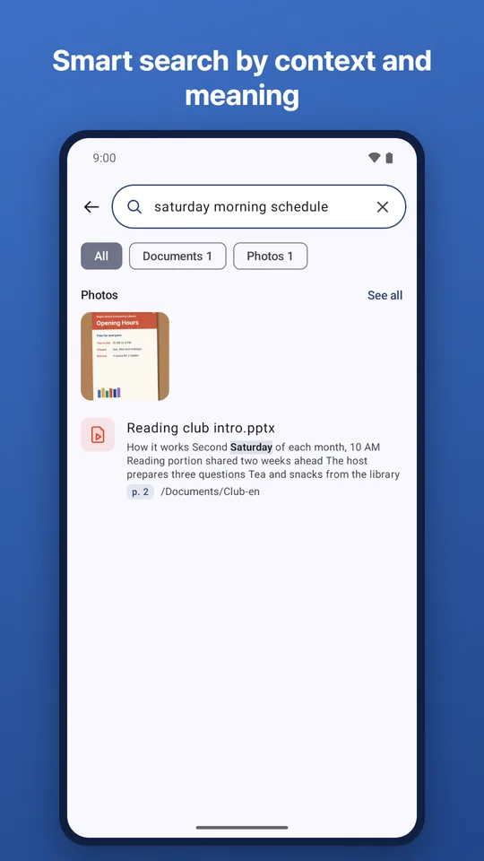

PeriDoc: HWP・PDF・Office ビューア
HWP（ハングル文書）、PDF、Word・Excel・PowerPointをオフラインで開ける文書ビューア。高速・軽量でプライバシー重視。
Google Play



PeriDocは、Android向けの高速で無料、安全な文書ビューアです。HWP、HWPX、PDF、Word（DOCX）、Excel（XLSX）、PowerPoint（PPTX）のファイルを、スマートフォンやタブレットでそのまま開けます。アカウントは不要で、ファイルがアップロードされることもありません。
HWP・HWPXビューア
韓国の学校や会社、役所から届いたHWPファイルを開く必要がありますか。PeriDocは、Hancom Officeの韓国語ワープロ「ハングル」で作成された文書（HWP、HWPX、HWP 3.0、HML）を、表・画像・ページレイアウトを保ったまま表示します。韓国語フォントを内蔵しているので文字が正しく表示され、パソコンのフォントを取り込めば、さらに元の文書に近い表示にできます。
PDFリーダー
テキスト検索、テキストの選択とコピー、目次、ページのサムネイル、パスワード付きPDFに対応し、PDFファイルを快適に読めます。
Office文書ビューア
Word文書（DOCX）、Excelのスプレッドシート（XLSX）、PowerPointのプレゼンテーション（PPTX）を、重いオフィスアプリ一式をインストールせずに手軽に閲覧できます。
文書の中身を検索（OCR対応）
ファイル名だけでなく、文書の中の文字まで検索できます。PeriDocは端末内のファイルを索引化しておくので、検索するとどのファイルの何ページに一致する箇所があるかがすぐにわかります。スキャンしたPDFや写真の中の文字も端末内だけで認識（OCR）し、検索結果に含めます。
スマート検索（オプション）
正確な言葉が思い出せませんか。スマート検索は文脈と意味を読み取って、関連する文書や写真の中の場面を見つけます。モデルを一度ダウンロード（約388 MB）すれば、その後はすべての処理がインターネットを使わずに端末内で行われます。
締め切りカード
お知らせや募集要項を開くと、申込期間、締め切り、開催日時など名前の付いた日付を見つけ、残り日数とともに文書の上に表示します。タップしてカレンダーに追加したり、問い合わせ先に電話をかけたりできます。韓国語と英語の文書の日付に対応しています。
画像で検索（スマート検索使用時）
1枚の画像から似た画像を探したり、紙の文書を撮った写真から端末内の元のファイルを探したりできます。
版の比較と同じファイルの整理
「報告書_final」「報告書_v2」のような同じ文書の複数の版をまとめ、2つの版の間で変更・追加・削除された箇所をページ上で強調表示します。広い画面では2つの版を並べて表示できます。同じファイルを見つけて、余分なコピーをゴミ箱に移せます。
折りたたみ端末とタブレットに最適化
Galaxy Tabや、開いたGalaxy Foldを横向きに持つと、ファイル一覧と文書を左右に並べて表示できます。フレックスモード（半分に折りたたんだ状態）では、文書が画面の上半分に表示され、ページ操作ボタンは使いやすい下半分に配置されます。キーボードショートカット（Ctrl+Fなど）とマウスホイールでのスクロールにも対応しています。
その他の形式
テキスト（TXT）、Markdown（MD）、CSV、HTML、画像（JPG、PNG、WebP、HEIC、GIF、BMP）。
主な機能
- 1ページずつの表示と連続スクロール、横画面での見開き2ページ表示、ピンチで拡大・縮小
- 文書内の検索、テキストの選択とコピー、表をCSVとしてコピー
- 目次とページのサムネイルで読みたい場所へすぐ移動、前回読んでいた位置から再開
- 最近の検索、文書内の一致箇所をひと目で一覧、アプリアイコンのショートカットからすばやく検索
- ページの回転、ページを画像として保存、PDFとして保存、共有、ほかのアプリで開く
- 端末内のすべての文書を見つけるファイルマネージャーを内蔵（ゴミ箱、ホーム画面ショートカット付き）
- デフォルトのアプリに設定すれば、Gmail、メッセンジャー、ダウンロード、ファイルマネージャーから添付ファイルをすぐに開ける
- 韓国語フォントを内蔵、パソコンのフォントも取り込み可能
プライバシーとオフライン
- PeriDocが文書をアップロードしたり外部へ送信したりすることはありません。文書を描画する表示部分は、ネットワークにアクセスできません。
- 索引化、文字認識（OCR）、スマート検索、締め切りカード、版の比較はすべて端末内だけで動作し、データをどこにも送信しません。
- オフラインで文書を開けます。登録もログインも不要です。
- インターネットを使うのは、画面下部の小さなバナー広告（Google AdMob）と、スマート検索のモデルをダウンロードするときだけです。